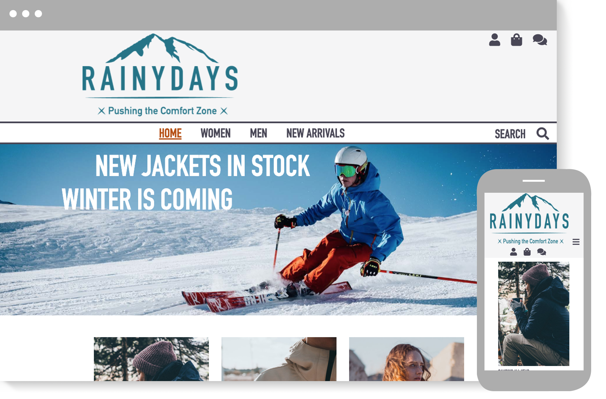

Cross-course project
- Rainydays -
Changes I have made on the project
Hover on Images
I have added a hover effect on the images on the site. When you hover the different images of the jackets the opacity changes on the images. I have made this change so it is easy for the user to se which jacket the user are aiming for.
Forms
I have updated and fixed the different forms and input I had on the site. I had a grey input background and that was not a good contrast. I change it to a white background, added border and the requirements text outside of the input field. Now it is easy to understand, easy to read the text and easy use.
Buttons
Added same style on the buttons on the site, was different style on some of the buttons under the forms. I did this change so every button has the same style.
Alt atribute
Some of the images did not have an alternate text for an images. For accessibility I added alt text on even images.
Media queries
The media queries for mobil devices was not completed. The header was cut off and missed a background colour. I added a max-width to solve the problem. Now it looks neat on mobil devices.